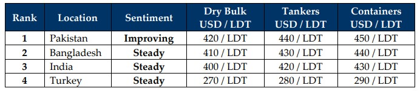

inWeekly Demolition Reports02/02/2026

… January 2026 joins the pages of history as being the purveyors of ongoing misery for the global ship recycling world as despite theodd wave of tonnage that has made us numb to the conflicting signals of the markets based on supply trends across the last 5 years, something eye-catching did change this week. And it would seem that the rising ripples from Trump’s train wreck of activity has posed global markets to setup a serious “Debbie Downer” for February 2026, especially if the current trends persist.
To start, we have noteworthy surges to report this week. Across the board, for most of the major fundamentals, except sub-continent steel plate prices that have become the perennial party poopers of the recycling world of late, the momentum was definitely beyond noticeable. The Baltic Exchange Dry Index, oil futures, and the U.S. Dollar collectively soared this week, creating ripples that would certainly be felt within the next 4 weeks. While the dry index soared 7.3% on the back of Capes pole-vaulting 12%, Panamaxes tripping up 1.6% in comparison, and Supras having a comparatively minor hiccup gain of 0.5%, oil futures impressively slid past USD 65/barrel and close the week out at USD 65.10 – a near 1% jump from last week.
And the U.S. Dollar’s performance across the ship recycling markets was reminiscent of Marilyn Monroe’s infamous wavy skirt subway photo, the wavy lines capturing just how volatile Trump has made global financial markets on the back of further tariff threats against Canada, nation states in Europe including France and Denmark, and even striking into the hearts of global ship recycling markets with Pakistan (surprisingly) taking the biggest of hits this week. Speaking of the ship recycling markets, they certainly seem to be having a global “up” moment, with India, Pakistan Bangladesh and Turkey all reportedly picking up some long overdue tonnage, although only India Bangladesh and Turkish anchorages are delivering the receipts to confirm these fixtures. India managed to even secure an LNG for strictly HKC recycling only and Turkey with its bevy of roros and “buffet-full bellies” confirming that all of the major ship recycling destinations collectively secured their share of available market vessels since the start of January 2026 (and in a long time).
Yet, the performances of the various dry indices stand to support the general expectation that supply will more than likely slow further down as we head into the traditionally quieter Chinese New Year period / warmer months, and as a variety of geopolitical and financial shocks are expected to arrive in February, including the critical elections in Bangladesh, an INR that’s consistently breaking its own depreciation records (now firmly in the 90s against the U.S. Dollar), and an urgent need to speed up HKC transitions across the Gadani shoreline in order to be ready when tonnage actually starts flowing in, Q1 2026 certainly stands critical. Notwithstanding, there was still some good news which came through this week as another yard in Gadani reportedly received the country’s first NK HKC approval after significant hard work, investment and the requisite infrastructure upgrades
For Week 05 of 2026, GMS Market Rankings / vessel indications are as below.

📄 Download PDF: Ship-recycling-market-insight-Week-05-01-30-2026-And_just_ike_that.pdfSource: GMS,Inc.https://www.gmsinc.net/gms_new/index.php/web